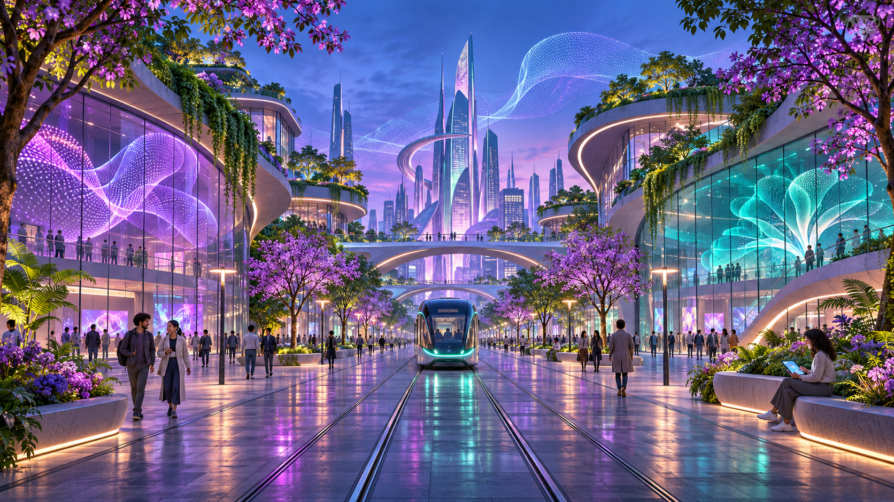

Изображения
Модель преобразует текстовый запрос в визуальную композицию, шаг за шагом уточняя её от общего шума к узнаваемой сцене.

GENESIS AI / ИНТЕРАКТИВНАЯ ВЫСТАВКА
Один замысел — город будущего. Исследуйте, как генеративный ИИ создаёт визуальные истории, как запрос управляет результатом и где необходима проверка человека.
Начать маршрут: технологии →01 / О ВЫСТАВКЕ
Генеративные модели превращают запросы в текст, изображения, видео и музыку. Посмотрите, как они работают и где результату нужна проверка человека.
Как работают модели →02 / ТРИ МЕДИА
Модель преобразует текстовый запрос в визуальную композицию, шаг за шагом уточняя её от общего шума к узнаваемой сцене.
Модель предсказывает последовательность кадров по описанию или исходному изображению, стараясь сохранить движение и целостность сцены.
Музыкальная модель связывает описание, ритм, тембр и структуру, чтобы создать композицию или песню.
03 / МАРШРУТ